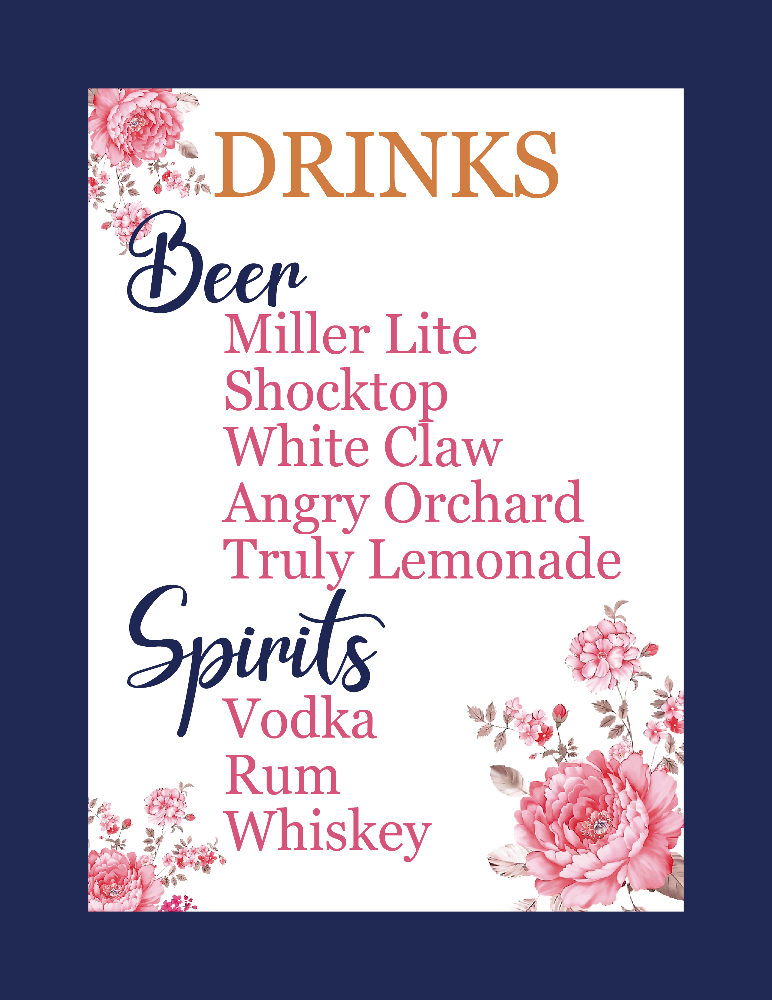
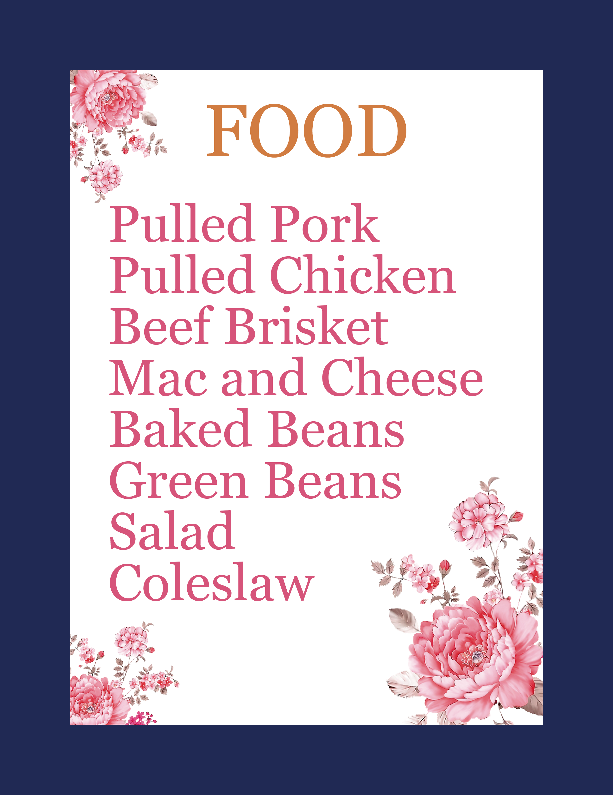
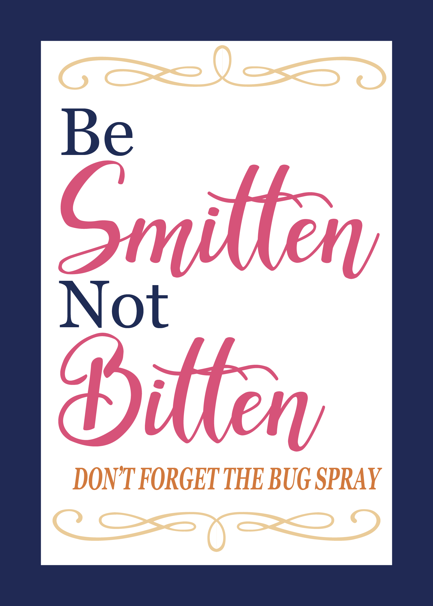
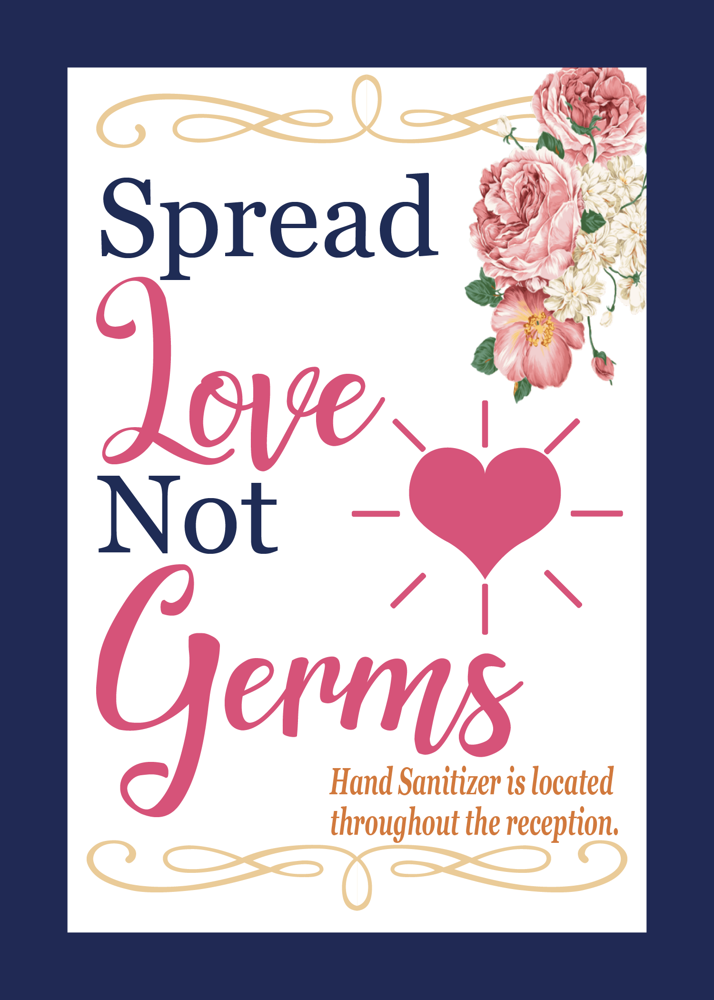
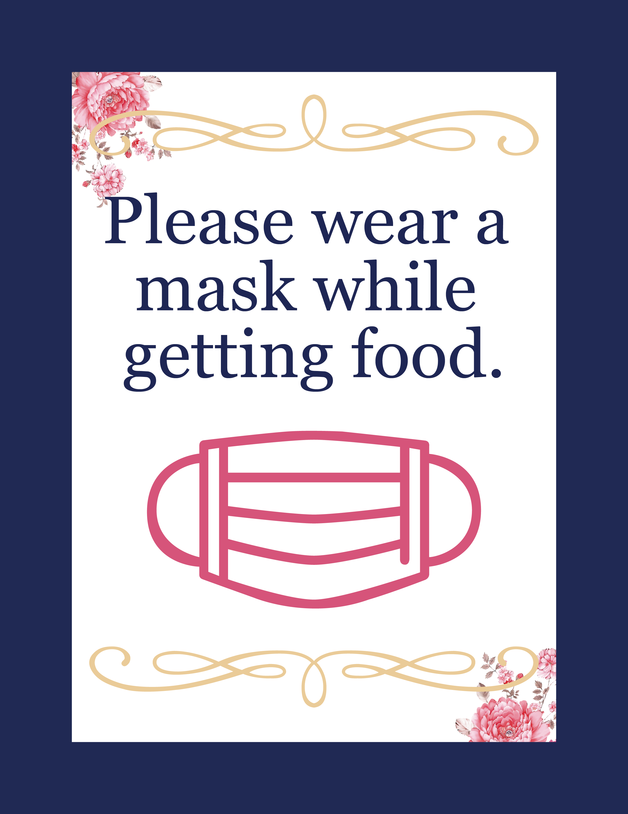
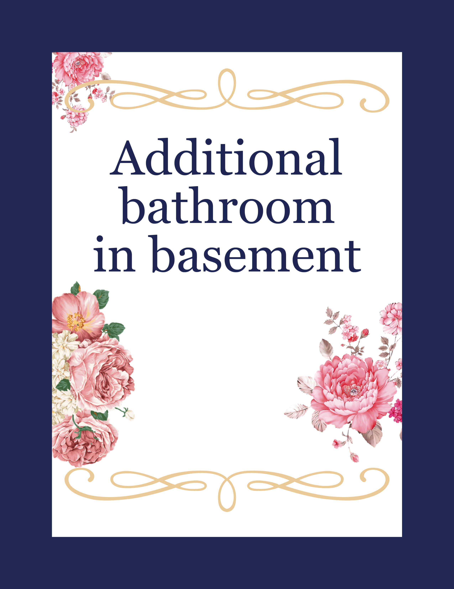
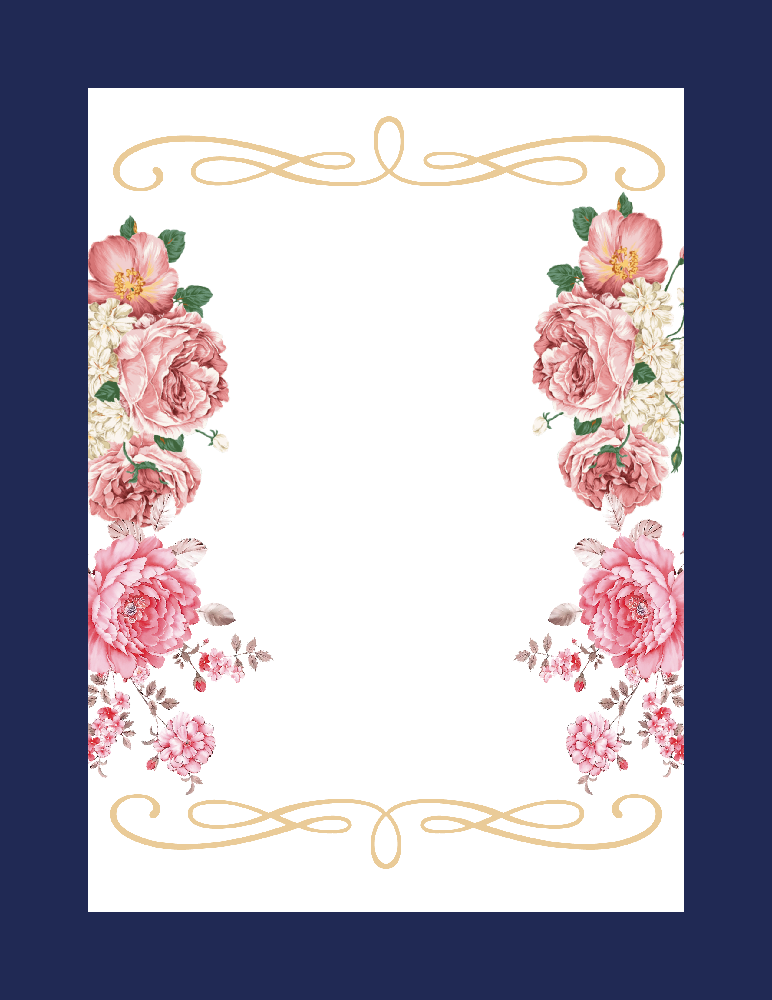
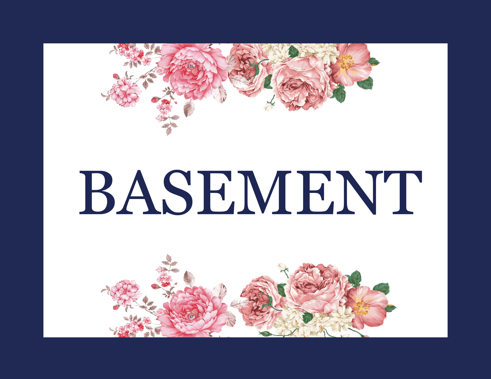

Wedding Signage
Having a wedding during a pandemic is difficult. From wearing masks, to socially
distancing, to a lower capicty at the church and reception. I worked with the bride
to ensure that that there was proper sinage for the church and reception
so that everyone was following policies while still feeling like the wedding
she always wanted. The client had given me a pallet and some general ideas
on what the designs should be, other than that I had free reign.
This project taught me to focus more on the concept, idea, and feeling of
a design and figure out how to translate that to the current situation.